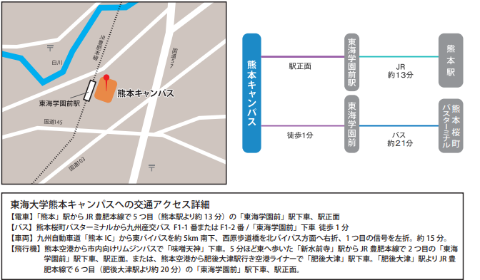

開催場所
〒862-8652
熊本県熊本市東区渡鹿9-1-1
東海大学熊本キャンパス
TEL:096-382-1141
交通機関
- 電車
ＪＲ「熊本」駅からJR豊肥本線で５つ目（熊本駅より約13分）の
「東海学園前」駅下車、駅正面
- バス《熊本サクラマチ発》
九州産交バス
F1-1番またはF1-2番／「東海学園前」下車 徒歩１分
- 車
九州自動車道「熊本IC」で下り、東バイパスを約５キロほど南下して北バイパス方面へ
右折、さらに１つ目の信号を左折後約２キロ直進、左側。約15分
- 飛行機
熊本空港から市内向けリムジンバスで「味噌天神」下車。
５分ほど東へ歩いた「新水前寺」駅からJR豊肥本線で２つ目の「東海学園前」駅下車、
駅正面。または、熊本空港からタクシーで約30分

駐車場
当日の駐車場に関してはありません
お近くのパーキングエリア、もしくは、
公共交通機関ををご利用ください。